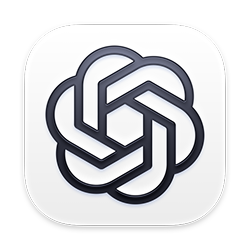

La Torre Eiffel iba a durar 20 años
documental33 s
Ninjasux Motion Studio convierte a Claude Code o Codex en tu estudio de animación. Le escribes «hazme un reel de qué es un cuásar» y te entrega el video terminado: guion, voz, animación 2D y 3D, efectos, música y portada. En tu computadora, sin plantillas y sin saber animar.
US$30 US$15 pago único
+ CapCut Assistant de regalo
 Claude Code
Claude Code

Codex BONO«Esa estrella no es una estrella» · 15 s · salió de una frase en el chat
Cómo funciona
Tu asistente de IA ya sabe programar. Motion Studio le da todo lo demás: el motor de animación 2D y 3D, la voz, el sonido, los estilos y las reglas de dirección para que el video salga bien a la primera.
asistenteGuion listo: 4 frases, datos de la NASA. Un solo mundo: la cámara entra al puntito de luz y vuelve a salir.✓ voz · ✓ animación · ✓ música · ✓ portadaDespués de pagar te llega el enlace. Descomprímela donde quieras.
📁 ninjasux-motion-studioEn Claude Code o en Codex, abre esa carpeta como proyecto. Tu asistente lee las instrucciones que trae y ya sabe usarla.
Claude CodeCodexLa primera vez instala lo que falte (ffmpeg y, si quieres 3D, Blender) y te enseña los ejemplos. Después, solo pides.
«Prepárate e instala lo que haga falta. Luego hazme un reel de por qué el pan se pone duro.»Ejemplos reales
Cada uno empezó con una pregunta escrita en el chat. La animación, el texto, los sonidos y el montaje los hizo la herramienta; la voz es de ElevenLabs. Dale play con sonido.
Una conexión (MCP) que deja a tu asistente de IA abrir y revisar tus proyectos de CapCut de escritorio. Animas con Motion Studio y terminas de editar en CapCut, con tu IA como segundo par de ojos.
Estilos incluidos
Medido, no prometido
| Video | Duración | Render final |
|---|---|---|
| Persona 2D (borrador) | 18 s | 13 s |
| Documental de archivo: la torre | 33 s | ≈1 min |
| Solo 2D: datos y cifras | 30 s | 2 min |
| Imprenta: la olla exprés | 36 s | 18 min |
| Acuarela: un objeto en una mesa | 30 s | 23 min |
| Producto realista: palomitas | 30 s | 54 min |
En una computadora con NVIDIA RTX 4060. La herramienta mide la tuya en 2 minutos y te da esta tabla con tus tiempos. Hay cuatro niveles de calidad, de borrador rápido a «cine».
Lo que necesitas
Claude Code o CodexCon una suscripción de Claude (Pro o superior) o de ChatGPT (Plus o superior). Se paga aparte.Lo que te llevas
Precio de lanzamiento
Solo para los primeros 20 compradores. Después sube a US$30. Los videos que hagas son tuyos y no pagas regalías.
Comprar ahoraPago seguro con tarjeta vía Stripe · ¿Dudas? oscar_8291@hotmail.com
Preguntas
No. Le pides las cosas a tu asistente de IA en el chat y él escribe y ejecuta todo. Tú revisas los borradores y decides.
Son asistentes de IA que trabajan dentro de tu computadora: leen archivos, escriben código y lo ejecutan. Claude Code es de Anthropic y Codex es de OpenAI. Motion Studio trae instrucciones para los dos. Si ya pagas Claude o ChatGPT, usa el que tengas.
No. Se usa conversando con tu asistente. Por eso puede hacer cosas que una plantilla no hace: cada video se arma para su tema.
Es una conexión (MCP) que instala tu asistente en un minuto. Con ella puede leer tus proyectos de CapCut de escritorio, revisar el corte y el video exportado, y colocar tus animaciones en una copia del proyecto. Nunca modifica tu edición original.
La voz real usa tus créditos de ElevenLabs: unos 400 a 600 por reel de 30 segundos. También puedes usar tu propia grabación. Mientras ajustas el guion usas la voz de prueba, que es gratis.
No. Hace personas dibujadas, mascotas y objetos con cara. Para personas reales usa tu propio video y pon las animaciones encima con el estilo «gráficos sobre video».
Sí. Puedes publicarlos y usarlos para tus clientes. Lo que no se permite es revender o compartir la herramienta.
Pagas con tarjeta en la página segura de Stripe. En menos de 24 horas te enviamos el enlace de descarga y la guía de instalación al correo o WhatsApp que dejaste al pagar.
Por ser un producto digital, no hay reembolsos una vez entregado. La excepción: si no logras instalarla en tu computadora y no podemos resolverlo juntos en 7 días, te devolvemos el 100%. Escríbenos a oscar_8291@hotmail.com.
US$15 en lanzamiento, con el CapCut Assistant de regalo. Solo los primeros 20.